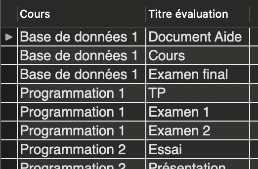

Jointures et agrégats
Problème
Pour chaque programme, on veut afficher le nom du programme et le nom de la personne responsable. On aurait un résultat du format suivant
| Nom programme | Nom responsable |
|---|---|
| Informatique appliquée | Bruce Wayne |
| Informatique - Jeux Vidéo | Kara Danvers |
Le problème : nom programme et nom professeur sont dans deux tables différentes.
Relation Programme - Enseignant
erDiagram
enseignants ||--o{ programmes : " "
enseignants {
NUMERIC(8) code_employe
VARCHAR(255) nom
VARCHAR(255) prenom
NUMERIC(9) num_assurance_sociale
TINYINT anciennete
}
programmes {
INTEGER code PK
VARCHAR(255) nom
NUMERIC(8) responsable FK
}Jointures
Une jointure permet de « joindre » deux tables ensemble pour en créer une seule. Ici la table résultant n'est pas une « vraie » table au sens où elle n'est pas enregistrée dans la base de données.
Il existe 3 types de jointures :
- Jointures internes et naturelles (vues en BD1)
- Jointures à gauche et à droite (vues en BD2)
- Jointures externes ou complètes (vues en BD2)
Jointures internes
Une jointure interne permet de récupérer les informations en croisant les informations de plusieurs tables.
On peut voir la jointure interne comme une intersection d'ensembles basé sur l'égalité d'une paire de colonnes.

Syntaxe des jointures internes
SELECT * FROM Nom_table_1 INNER JOIN Nom_table_2
ON Nom_table_1.colonne_1 = Nom_table_2.colonne_2;
Donc dans l'exemple précédent
SELECT Programme.nom, Enseignant.nom FROM Enseignant INNER JOIN Programme
ON Enseignant.code_employe = Programme.responsable;
On préfixe les colonnes des noms de table pour éviter les ambiguité de nom.
Allègement de l'écriture
Lorsqu'il n'y a pas de risque d'ambiguité de nom, on peut omettre le nom des tables comme préfixe. On peut aussi utiliser les alias pour clarifier le nom des colonnes.
SELECT Programme.nom AS 'Nom programme', Enseignant.nom AS 'Responsable'
FROM Enseignant INNER JOIN Programme
ON code_employe = responsable;
--- Exercice 2.5.1 ---
A. Sélectionnez le nom de chaque étudiant et le nom du programme dans lequel il est inscrit. Triez les résultats par programme.
B. Sélectionnez pour chaque document le code de l'étudiant qui l'a remis. Affichez le nom du document et le code de l'étudiant.
Jointure naturelle
Une jointure naturelle fonctionne comme la jointure interne, mais ne nécessite pas de préciser sur quelle colonne se fait la jointure.
Les colonnes portant le même nom entre les 2 tables servent à effectuer la jointure.
ATTENTION : si plus d'une paire de colonne portent le même nom, alors la jointure naturelle vérifira que les deux paires concordent.
Syntaxe de la jointure naturelle :
SELECT * FROM Nom_table_1 NATURAL JOIN Nom_table_2;
On veut afficher le code d'employé et le sigle du cours pour chaque groupe.
SELECT enseignant, numero_groupe, sigle
FROM groupes NATURAL JOIN cours;

erDiagram
cours ||--o{ groupes : " "
cours {
INTEGER cours_id PK
NUMERIC(8) enseignant FK
CHAR(11) sigle
TINYINT duree "=60"
VARCHAR(255) nom
}
groupes {
INTEGER groupe_id PK
INTEGER session FK
INTEGER cours_id FK
NUMERIC(8) enseignant FK
TINYINT numero_groupe
}--- Exercice 2.5.2 ---
A. Sélectionnez le titre des évaluations pour lequel aucun document n'est associé. A B. Sélectionnez l'année admission et le nom de l'étudiant pour chaque étudiant des programmes sous la responsabilité de l'enseignant portant le code 7654.
Problème
On veut afficher pour chaque étudiant son nom, le titre des documents qu'il a remis et la date à laquelle la remise s'est faite.
Quelle requête écrire ?
Jointures multiples
On peut appliquer une jointure sur le résultat d'une jointure.
SELECT nom, titre, date_remise FROM etudiants
INNER JOIN evaluations_etudiants ON code = etudiant
INNER JOIN documents ON document = document_id;

44 lignes ont été sélectionnées.
--- Exercice 2.5.3 ---
A. Sélectionnez pour l'étudiante Nathasha Romanov le titre de tous les documents qu'elle a remis.
B. Trouvez la première année durant laquelle le cours portant le sigle 420-2B4-VI s'est donné.
Agrégats
Il est possible d’agréger des données ensemble. Un agrégat consiste à regrouper les données qui partagent une valeur commune pour une colonne précise. On fait un agrégat avec une clause GROUP BY.
On utilise généralement une fonction d'agrégation avec un agrégat pour obtenir des informations sur le groupe.
Il faut faire attention dans la sélection des colonnes pour n'afficher que des colonnes qui ont la même valeur pour tout le groupe.
Exemple
Sélectionner le nombre d'étudiant dans chaque groupe.
SELECT groupe, count(etudiant) FROM Inscription
GROUP BY groupe;


--- Exercice 2.5.4 ---
A. Comptez le nombre d'évaluations pour chaque groupe. Affichez seulement l'id du groupe et le nombre d'évaluations.
B. Comptez le nombre de groupes pour chaque session. Affichez le nombre de groupe, le semestre et l'année de chaque session.
Agrégats multiples
Il est possible de former les agrégats par plusieurs critères. Par exemple, on souhaite obtenir le nombre de document remis pour chaque étudiant par groupe.
SELECT count(id_document), etudiant, groupe FROM Document
INNER JOIN EvaluationEtudiant ON id_document = document
INNER JOIN Evaluation ON EvaluationEtudiant.id_evaluation = Evaluation.id_evaluation
GROUP BY etudiant, groupe;

--- Exercice 2.5.5 ---
Sélectionnez pour chaque cours le nombre de fois qu'il s'est donné à chaque session (nombre de groupes). Affichez le semestre, l'année de la session ainsi que le sigle du cours. Triez les résultats par sigle.
Condition sur les groupes
Il est possible de mettre une condition sur un groupe. Une telle condition va dans une clause HAVING.
DINSTINCTION IMPORTANTE :
-
Une condition portant sur chaque enregistrement (avant agrégation) : WHERE
-
Une condition portant sur un agrégat de données (avec une fonction d'agrégation) : HAVING
Exemple
On veut les groupes de 3 étudiants et plus :
SELECT groupe, count(etudiant) FROM Inscription
GROUP BY groupe
HAVING count(etudiant) >= 3;

Exemple : Alias
On peut utiliser les alias pour éviter de réécrire plusieurs fois le résultat d'une même fonction.
SELECT groupe, count(etudiant) AS nombre_etudiants FROM Inscription
GROUP BY groupe
HAVING nombre_etudiants >= 3;
Notez bien : le nom nombre_etudiants est inscrit tel quel sans guillemet, c'est pourquoi il est accessible. Avec des guillemets, cela aurait changé l'affichage, mais nous n'aurions pas pu l'utiliser dans la clause HAVING.
--- Exercice 2.5.6 ---
A. Sélectionnez le nombre de cours pour chaque session (id_session seulement) où il ne se donne pas plus de 2 cours;
B. Sélectionnez le nombre d'étudiants admis par année après 2019.
Sélection unique
Dans certains cas, en combinant les jointures avec les agrégats, on peut dupliquer des résultats.
Pour s'assurer que les résultats ne sont pas dupliquer, on doit utiliser le mot-clé DISTINCT. On peut utiliser le mot-clé de deux façons
-- Dans une requête SELECT pour avoir que les valeurs différentes
SELECT DISTICT colonne
-- Dans la fonction count pour compter le nombre de valeurs distinctes
count(DISTINCT colonne)
--- Exercice 2.5.7 ---
Sélectionnez les sigles des cours ayant plus de 2 évaluations lorsqu'ils se sont donnés. Chaque sigle doit apparaître qu'une seule fois.